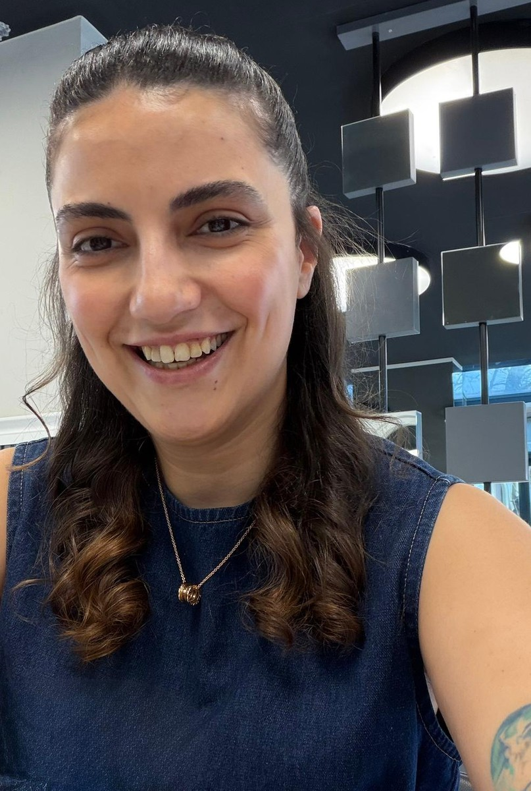
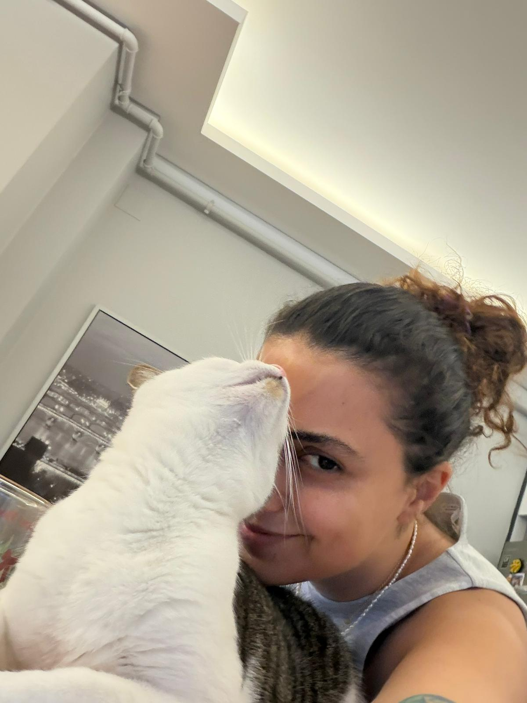
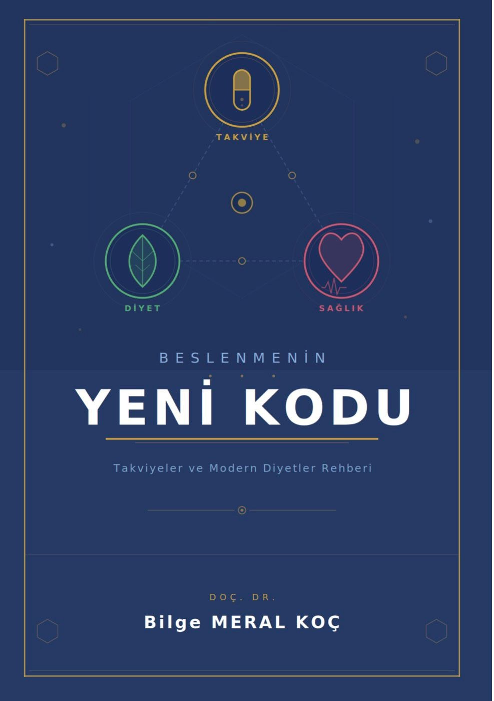

Akademisyen · Klinisyen · Beslenme ve Diyet Uzmanı
Bilimi mutfağa, beslenmeyi iyi hissetmeye yaklaştıran bütüncül rehberlik.
Doç. Dr. Bilge Meral Koç; obezite, insülin direnci, bağırsak sağlığı ve klinik beslenme alanlarında kanıta dayalı bilgiyi sade, uygulanabilir ve nazik bir yol haritasına dönüştürür.

İyilik hali odaklı bilimsel beslenme
Yaklaşım
Beslenme bir yasak listesi değil, bedenle kurulan ilişkidir.
Çalışma anlayışı tek bir formüle dayanmaz. Uyku, stres, hareket, hormonlar, bağırsak sağlığı, metabolizma ve günlük hayat ritmi birlikte ele alınır.
Amaç; bilimsel bilgiyi karmaşık bir uzmanlık dili olmaktan çıkarıp kişinin kendi mutfağında, iş temposunda ve hedeflerinde sürdürebileceği bir plana çevirmektir.
5 Yapraklı Lotus
Bütünsel sağlığa uzanan beş aşama
Köklenme
Farkındalık, niyet ve değişime başlama cesareti.
Besleme
Bedeni kıtlığa sokmadan temiz, dengeli ve sürdürülebilir beslenme.
Canlanma
Hareket, enerji ve metabolik ritmi destekleyen yaşam pratikleri.
Yenilenme
Ödem, toksin yükü ve zihinsel yorgunlukla daha bilinçli çalışma.
Çiçek Açma
Hafiflik, özgüven ve kişiye uygun ideal sağlık haline yaklaşma.
Uzmanlık Alanları
Kanıta dayalı, uygulanabilir, insanı bütün gören çalışma alanları.
İnsülin direnci
Laboratuvar okumaları, öğün zamanlaması, makro denge ve yaşam ritmi birlikte yorumlanır.
Bağırsak sağlığı
Mikrobiyom, şişkinlik, prebiyotik kaynaklar ve klinik beslenme arasındaki bağlar sadeleştirilir.
Obezite ve kilo yönetimi
Kısıtlamadan çok metabolizmayı anlamaya, davranış değişimine ve kalıcı dengeye odaklanılır.
Spor ve performans
Egzersiz performansı, kas sentezi, toparlanma ve enerji planlaması bilimsel zeminde ele alınır.
Beslenme Doçenti Anlatıyor
Tartıdan metabolizmaya, mutfaktan kliniğe uzanan kısa ve anlaşılır bölümler.
Podcast yayınlarında bilimsel beslenme konuları, günlük hayatta uygulanabilecek bir dille ele alınır.
Yakında
Ürünler, eğitimler, buluşmalar ve rehberler için sade bir merkez.

Bilimsel içerikli modüller ve mesleki gelişim eğitimleri.
İnsülin direnci ve metabolik sağlık gibi konularda canlı oturumlar.
Yeni Kodu ve pratik e-rehberler için duyuru alanı.
Önerilen ürünleri ve seçili kaynakları bulabileceğiniz alan.

Kitap
Beslenmenin Yeni Kodu
Takviyeler ve modern diyetler rehberi. Satış linki geldiğinde bu kart doğrudan kitap sayfasına bağlanabilir.
İçerik Dili
Instagram'daki bilim serisi ruhu: net başlık, güvenilir kanıt, kolay uygulama.
Akademik Geçmiş
Bilimin içinden gelen sade bir anlatım.
Beslenme ve Diyetetik
Beslenme ve Diyetetik
Klinik ve metabolik odaklı akademik çalışmalar
Sağlık Bilimleri Fakültesi öğretim üyesi
İletişim